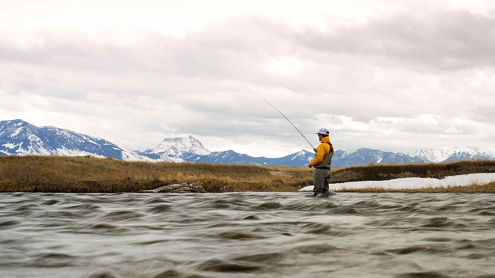

<<!DOCTYPE html>
  <html lang="en" dir="ltr">

  <head>
    <meta charset="utf-8">
    <title>Spring</title>
    <link href="seasons.css" rel="stylesheet" type="text/css">
  </head>

  <body>
    <div id="wrap">
      <header>
        
      </header>

      <nav>
        <ul>
          <li><a href="seasons.html">Home</a></li>
          <li><a href="summer.html">Summer</a></li>
          <li><a href="winter.html">Winter</a></li>
          <li><a href="fall.html">Fall</a></li>
          <li><a href="spring.html">Spring</a></li>
        </ul>
      </nav>

      <section>
        <h1>Spring Fly Fishing</h1>
      </section>

      <footer>
        <p>Spring Fly Fishing in Montana Some of Montana's best hatches occur early in the season before the rivers become swollen with snowmelt. Savvy anglers have realized that targeting these hatches can provide some fantastic early season dry fly
          fishing. Many Montana fly fishing guides rate the spring as their favorite time to hit local rivers.</p>
      </footer>
    </div>
    <!--Close Wrap-->
  </body>

  </html>
